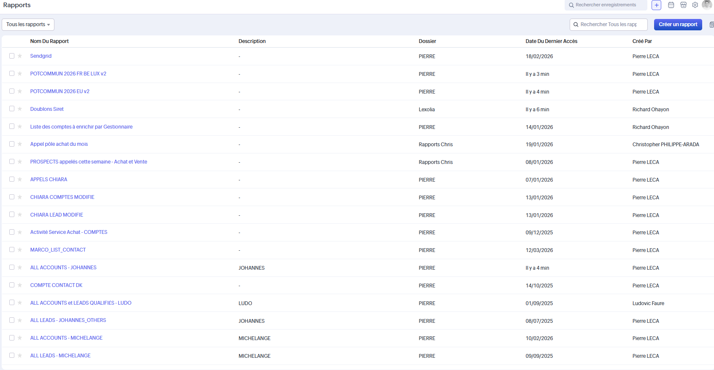
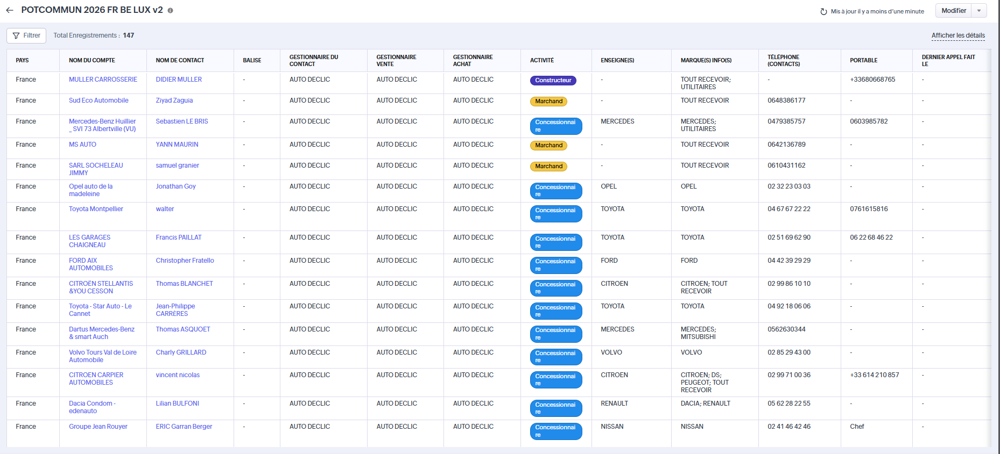

Manque de gouvernance
Trop de rapports, noms incohérents, certains vides ou inutilisés.
Analyse de l’existant : trop nombreux, nomenclature incohérente, certains vides, utilisation dans les dashboards, qualité des données et maintenance des rapports critiques.
Les rapports représentent un atout stratégique du CRM, mais l’état actuel révèle des problèmes de gouvernance : trop nombreux, nomenclature anarchique, certains vides ou obsolètes, maintenance non assurée.
Trop de rapports, noms incohérents, certains vides ou inutilisés.
Les dashboards d’accueil deviennent inexploitables si leurs rapports sources sont défaillants.
Des rapports comme POTCOMMUN montrent la richesse possible si bien gérés.
La liste révèle une grande diversité de rapports, mais aussi une organisation perfectible.

Ce rapport avec 147 enregistrements illustre la richesse possible des rapports Zoho CRM quand bien construits.

L’état actuel des rapports impacte directement la qualité des dashboards et la fiabilité du pilotage.
Certains liens `/tab/Reports/6643904000281400167` mènent à des rapports sans données exploitables.
Noms comme “Rapport Ugu r”, “Rapports Chris”, “Akrolia” compliquent la recherche et la maintenance.
La liste longue et non filtrée crée de la confusion et potentiellement des doublons.
Le filtre “Tous les rapports” ne permet pas une recherche rapide par mot-clé ou date.
Prioriser la gouvernance des rapports pour sécuriser l’analytique et le pilotage métier.
Lister tous les rapports actifs, leur propriétaire, leur fréquence de mise à jour, leur usage réel.
Adopter une convention : [Module]-[Objectif]-[Période]-[Responsable]. Exemple : Comptes-POTCOMMUN-2026-FRBE-LUX.
Supprimer ou archiver les rapports systématiquement vides ou obsolètes.
Documenter les rapports alimentant les dashboards d’accueil et leur fréquence de rafraîchissement.
Améliorer la recherche et les tags pour identifier rapidement les rapports par usage ou responsable.
Planifier un audit trimestriel des rapports et leur usage réel dans le CRM.